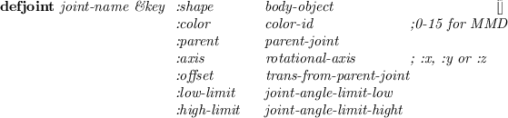

Subsections
XToolKitは、
ボタン、プルダウンメニュ、テキストwindowなどのGUI要素を使用して
GUI (Graphical User Interface)を作成するのを容易にするための
高レベルXwindowインターフェースである。
Xlibクラスとの大きな違いは、XToolKitがXserverから送られる
Xeventと一致するユーザーが定義した対話ルーチンを呼び出し、
それらの対話指向windowパーツと一致した外観を提供することである。
XToolKitに含まれるクラスは、以下の継承構造を持っている。
xwindow
panel
menubar-panel
menu-panel
filepanel
textviewpanel
confirmpanel
panel-item
button-item
menu-button-item
bitmap-button-item
menu-item
text-item
slider-item
choice-item
joystick-item
canvas
textwindow
buffertextwindow
scrolltextwindow
textedit
scroll-bar
horizontal-scroll-bar
以下に示すxwindowクラスはXToolKitの5つの基本クラスである。
panel, panel-item,
canvas, textWindowとscroll-bar。
menubar-panelとmenu-panelは、panelの下に定義される。
新しいアプリケーションwindowを作り、イベントの上でそれを実行させるための
基本的な方策は、以下の通りである。
- アプリケーションクラスの定義 アプリケーションクラスwindowは、
XToolKitの要素を置く能力を持つpanelのサブクラスとして
定義されなければならない。
- イベントハンドラの定義 アプリケーションクラスにおいて、
ボタンが押されたり、メニューアイテムが選択されたりしたときに
呼び出されるイベントハンドラを定義する。
イベントハンドラは、panel-itemの指定された引数を持つメソッドとして
定義すべきである。
- サブパネルの定義 もし、menubar-panelを使用するなら、
アプリケーションwindowの一番上におかれる。
したがって、:create-menubarによって最初に作成されなければ
ならない。
同様に、menu-panelは、そのmenu-panelと関連する
menu-button-itemより前に定義する必要がある。
- パネルアイテムの作成 button-item,
text-item, slider-itemなどのようなパネルアイテムは、
(send-super :create-item class label object method)によって
作成することができる。
上記で定義されたイベントハンドラは、それぞれのパネルアイテムと
接続される。
これらの初期化手続きは、アプリケーションwindowクラスの
:createメソッドの中で定義すべきである。
必要なときはいつでもイベント送信を停止するためのquitボタンを
定義することを忘れないこと。
どんなtextWindowとcanvasも、:locate-itemメソッドを経由して
アプリケーションwindowの中に置くことができる。
- window全体の作成 :createメッセージをアプリケーション
クラスに送ることで、windowにXToolKitの要素を正しく置いたアプリケーション
windowを作成する。
- イベント送信の実行 Xserverからイベントを受け、一致する
windowに配るためには、window-main-loopを実行すること。
Solaris2上では、イベントを配るための異なったスレッドである
window-main-threadで実行する。
window-main-threadでは、最上位レベルの対話が活きている。
window-main-threadを２回以上実行してはならない。
現在の実行において、
イベント構造は固定イベントバッファ（25要素の整数ベクトル）から受け、
同じバッファが全てのイベントに関して再使用される。
イベント構造は、同時に2つ以上のイベントを参照する必要があるとき、
コピーされなければならない。
window-main-loopは、Xserverから送られる全てのイベントを
捕獲し、イベントが発生したwindowに配るための関数である。
event [変数]
-
- もっとも最近のイベント構造を持つ25要素の整数ベクトル
next-event [関数]
-
-
eventの中にイベント構造を蓄積し、
もし１つでも未決定のイベントがあればそれを返し、
なければNILを返す。
event-type event [関数]
-
-
eventのイベント型を表現するキーワードsymbol返す。
イベント型キーワードは、
:KeyPress (2),
:KeyRelease (3),
:ButtonPress (4),
:ButtonRelease (5),
:MotionNotify (6),
:EnterNotify (7),
:LeaveNotify (8),
:FocusIn (9),
:FocusOut (0),
:KeymapNotify (1),
:Expose (12),
:GraphicsExpose (13),
:NoExpose (14),
:VisibilityNotify (15),
:CreateNotify (16),
:DestroyNotify (17),
:UnmapNotify (18),
:MapNotify (19),
:MapRequest (20),
:ConfigureNotify (22),
:ConfigureRequest (23),
:GravityNotify (24),
:ResizeRequest (25),
:CirculateNotify (26),
:CirculateRequest (27),
:PropertyNotify (28),
:SelectionClear (29),
:SelectionRequest (30),
:SelectionNotify (31),
:ColormapNotify (32),
:ClientMessage (33),
:MappingNotify (34),
:LASTEvent (35)である。
event-window event [関数]
-
-
eventが発生したwindowオブジェクトを返す。
event-x event [関数]
-
-
eventからそのイベントが発生したx座標を抜き出す。
(すなわち、window内におけるマウスポインタの横方向の相対的な位置)
event-y event [関数]
-
-
eventからそのイベントが発生したy座標を抜き出す。
(すなわち、window内におけるマウスポインタの縦方向の相対的な位置)
event-width event [関数]
-
-
:configureNotifyイベントに幅パラメータを表現する
eventの８つの要素を返す。
event-height event [関数]
-
-
:configureNotifyイベントに高さパラメータを表現する
eventの8つの要素を返す。
event-state event [関数]
-
-
キーの状態で変更されたマウスボタンを表現するキーワードのリストを返す。
キーワードは、:shift, :control, :meta, :left, :middleと:rightである。
例えば、もしシフトキーが押されている状態で左のボタンが押されたならば、
(:shift :left)が返される。
display-events [関数]
-
-
x:nexteventによって捕獲された全てのxwindowイベントを表示する。
Control-Cは、この関数を停止させる唯一の方法である。
window-main-loop &rest forms [マクロ]
-
-
Xeventを受け、イベントが発生したwindowオブジェクトにそれを
配る。
イベントの型に沿って、
:KeyPress, :KeyRelease, :ButtonPress,
:ButtonRelease, :MotionNotify,
:EnterNotify, :LeaveNotify
や :ConfigureNotifyと名付けられた
windowクラスのメソッドがeventを引数として
呼び出される。
もし、formsが与えられたならば、
到着したイベントがチェックされるとき毎にそれらを評価する。
window-main-thread [関数]
-
-
スレッドであることを除いてwindow-main-loopと同じことをする。
window-main-threadは、Solaris2でのみ実現されている。
window-main-threadは、read-eval-printが入力されない
エラーハンドラをインストールしている。
エラー情報を表示した後、そのイベントは処理を続ける。
panel [クラス]
:super xwindow
:slots (pos items fontid
rows columns ;total number of rows and columns
next-x next-y
item-width item-height)
-
- panelは、パネルアイテムや他のpanelを含んだどんなxwindowも置くこと
ができるxwindowである。
panelオブジェクトは、panelの中で生成されたパネルアイテムへの
デフォルトフォントを供給する。
アプリケーションwindowは、panelのサブクラスとして定義
去れなければならない。
:create &rest args &key ((:item-height iheight) 30)((:item-width iwidth) 50)[メソッド]
(:font font-lucidasans-bold-12) ((:background color) *bisque1*)
&allow-other-keys)
-
- panelを生成し、初期化する。
スーパークラスの:createが呼び出されるため、
xwindowに対する全ての生成用パラメータ（:width, :height,
:border-widthなど）が許される。
:item-heightと:item-widthは、最小の高さと幅をそれぞれのパネルアイテムに
与える。
:items [メソッド]
-
- 関連するアイテムを全てリストで返す。
:locate-item item &optional x y [メソッド]
-
-
itemは、xwindowオブジェクト（ふつうはパネルアイテム）である。
もしxとyが与えられたならば、アイテムはそこに置かれる。
そうでなければ、itemは、もっとも最近に置かれたアイテムに
隣接するように置かれる。
アイテムは、
図 15のように
上から下に向かって、また左から右に向かって置かれていく。
:locate-itemは、またitemsやsubwindowsリストに
itemを追加し、:mapを送ることにより見えるようにする。
Figure 15:
panelのアイテムレイアウト
|

|
:create-item klass label receiver method &rest args[メソッド]
&key ((:font fontid)
&allow-other-keys)
-
- klassで指定されるパネルアイテムのクラス
（すなわち、button-item, menu-button-item, slider-item, joystick-itemなど),
のインスタンスを作り、:locate-itemを用いてpanelにアイテムを置く。
argsは、klassの:createメソッドに送られる。
labelは、パネルアイテムの中に書かれる識別文字列である。
receiverとmethodは、一致するイベントを呼び出すイベントハンドラを
指定する。
:delete-items [メソッド]
-
- パネルアイテムを全て削除する。
:create-menubar &rest args [メソッド]
&key (:font fontid)
&allow-other-keys
-
- menubar-panelを作成し、panelの最上部に置く。
以下に示すメソッドは、イベントがイベントハンドラのないpanelに送られたとき、
"subclass's responsibility"警告メッセージを避けるために提供されている。
ユーザーのアプリケーションでは、これらのメソッドを上書きしなければならない。
:quit &rest a [メソッド]
-
-
window-main-loopに:quitメッセージを送り、
イベント処理を停止する。
:KeyPress event [メソッド]
-
- NILを返す。
:KeyRelease event [メソッド]
-
- NILを返す。
:ButtonPress event [メソッド]
-
- NILを返す。
:ButtonRelease event [メソッド]
-
- NILを返す。
:MotionNotify event [メソッド]
-
- NILを返す。
:EnterNotify event [メソッド]
-
- NILを返す。
:LeaveNotify event [メソッド]
-
- NILを返す。
menu-panel [クラス]
:super panel
:slots (items item-dots item-height
charwidth charheight
height-offset
highlight-item
color-pixels
active-color)
-
- menu-panelは、panel-buttonとmenu-itemのみを
含むことができるパネルの一種である。
panelと異なり、menu-panelはふつう見えないし、
menu-panelと関連したbutton-itemが押された時に
表示される。
もし、menu-panelがいつも見えるように作られたならば、
ピンを刺したメニューとなる。
マウスイベントに対するmenu-itemの応答は、アイテムの外のどこかで
押されたマウスボタンのようにふつうのmenu-buttonと
全く異なっている。
menu-panelを使用するためには、最初に作成し、
その中にbutton-itemを置く。
それから、menu-button-itemがpanelの中あるいはmenubarの中に
:menuの引数としてmenu-panelと一緒に作成される。
:create &rest args &key(:items) (:border-width 0) (:font font-courb12)[メソッド]
(:width 100) (:height-offset 15) (:color *bisque1*) (:active *bisque2*)
&allow-other-keys)
-
- menu-panel windowを作成する。
そのwindowの大きさは、新しいmenu-itemが追加される時に
拡張される。
:add-item label name &optional (receiver self) &rest mesg [メソッド]
-
-
このmenu-panel windowの中にmenuアイテムを追加し、
対応する行動を張り付ける。
マウスボタンがアイテムの上で外されたとき、
receiverオブジェクトはmesgを受け取る。
menubar-panel [クラス]
:super panel
:slots
-
- menubar-panelは、親panelの最上部にいつも置かれるサブパネルである。
メニューバーに置かれるパネルアイテムは、menu-button-itemで
なければならない。
menubar-panelは、panelの:create-menubarメソッドにより
生成される。
FilePanelは、ファイルやディレクトリを対話的に処理する
アプリケーションwindowである。
cdやgo-upボタンを使用することにより、
どんなディレクトリも見に行くことができるし、
以下のScrollTextWindowの中にディレクトリ内に含まれるファイルを
表示する。
テキストファイルは、異なったwindow(TextViewPanel)の中に
表示することができる。
ファイルは、また印刷することができ、削除することができ、
ボタンをクリックすることにより簡単にコンパイルすることができる。
ファイルを印刷するとき、a2ps file | lprコマンドがforkされたプロセスとして実行される。
TextViewPanelは、テキストファイルを表示するための
アプリケーションwindowクラスである
(図 17)。
プログラムテキストは、もっとも簡単なアプリケーションwindowの１つが
どのように記述されているかを見れる。
:createメソッドにおいて、quitボタンとfindボタンと
ファイルの中を捜すための文字列を供給するためのtext-itemを
作成する。
view-windowは、縦と横にスクロールバーを持ちファイルを表示するための
ScrollTextWindowである。
TextViewPanelは、windowマネージャーにより一番外側のタイトルwindowの
大きさを変えたときview-windowの大きさを変えるために
:ConfigureNotifyイベントを捕獲する。
Figure 17:
テキスト表示パネルwindow
|
|
(defclass TextViewPanel :super panel
:slots (quit-button find-button find-text view-window))
(defmethod TextViewPanel
(:create (file &rest args &key (width 400) &allow-other-keys)
(send-super* :create :width width args)
(setq quit-button
(send self :create-item panel-button "quit" self :quit))
(setq find-button
(send self :create-item panel-button "find" self :find))
(setq find-text
(send self :create-item text-item "find: " self :find))
(setq view-window
(send self :locate-item
(instance ScrollTextWindow :create
:width (setq width (- (send self :width) 10))
:height (- (setq height (send self :height)) 38)
:scroll-bar t :horizontal-scroll-bar t
:map nil :parent self)))
(send view-window :read-file file))
(:quit (event) (send self :destroy))
(:find (event)
(let ((findstr (send find-text :value)) (found)
(nlines (send view-window :nlines)))
(do ((i 0 (1+ i)))
((or (>= i nlines) found))
(if (substringp findstr (send view-window :line i)) (setq found i)))
(when found
(send view-window :display-selection found)
(send view-window :locate found))))
(:resize (w h)
(setq width w height h)
(send view-window :resize (- w 10) (- h 38)))
(:configureNotify (event)
(let ((newwidth (send self :width))
(newheight (send self :height)))
(when (or (/= newwidth width) (/= newheight height))
(send self :resize newwidth newheight))) ) )
panel-item [クラス]
:super xwindow
:slots (pos notify-object notify-method
fontid label labeldots)
-
- panel-itemは、パネルアイテムwindowのすべての種類において、
アイテムが指定するイベントが発生したとき
notify-objectのnotify-methodを呼び出すための
抽象クラスである。
:notify &rest args [メソッド]
-
-
notify-objectのnotify-methodを呼び出す。
イベント応答やnotify-methodへ送るための引き数が
アイテムにより区別される。
- button-item
- ボタンは、同じbutton-itemの押し、外し時に応答。
引き数はbutton-itemオブジェクトである。
- menu-button-item
- メニューアイテムの選択時に応答。
引き数は、menu-button-itemオブジェクトである。
- choice-item
- 新しい選択ボタンの選択時に応答。
引き数は、choice-itemオブジェクトとその選択番号である。
- text-item
- 改行あるいはリターンの入力時に応答。
引き数は、text-itemオブジェクトと入力行（文字列）である。
- slider-item
- スライダーノブは、つかみと移動時に応答。
引き数は、slider-itemオブジェクトと新たな値である。
- joystick-item
- ジョイスティックは、つかみと移動時に応答。
引き数はslider-itemオブジェクトと新しいxとyの値である。
:create name reciever method &rest args[メソッド]
&key ((:width w) 100) ((:height h) 100) (:font font-courb12)
&allow-other-keys
-
- パネルアイテムを作成する。
パネルアイテムは、抽象クラスである。
このメソッドは、サブクラスによってsend-superを通してのみ
呼び出すべきである。
button-item [クラス]
:super panel-item
:slots
-
- button-itemは、簡単なパネルアイテムである。
button-itemは、四角ボックスとその中のラベル文字列を持っている。
クリックされたとき、button-itemはpanel-itemオブジェクトを唯一の引き数として
notify-objectのnotify-method
を呼び出す。
:draw-label &optional (state :top) (color bg-color) (border 2) (offset) [メソッド]
-
-
button-itemのラベルを書く。
:create label revciever method &rest args[メソッド]
&key:width :height (:font (send parent :gc :font))
(:background (send parent :gc :background))
(:border-width 0)
(:state :top)
&allow-other-keys
-
- button-itemを作成する。
もし、ボタンの幅と高さが与えられないなら、サイズは
与えられたフォントを用いて書かれた
ラベル文字列に合わせて自動的に設定される。
:border-widthはデフォルトで0であるが、
擬似３次元表現でボタンを浮き出しにする。
背景やフォントは親window(すなわち、panel)で定義されているものを
デフォルトとする。
:ButtonPress event [メソッド]
-
-
もし、ボタンであれば、背景色をグレーにする。
:ButtonRelease event [メソッド]
-
-
eventの背景色を標準に変更する。
menu-button-item [クラス]
:super button-item
:slots (items item-dots item-labels
charwidth charheight
menu-window window-pos high-light)
-
- プルダウンメニューを定義する。
menu-button-itemは、button-itemのようであるが、
menu-button-itemは、ボタンの下の関連するmenu-panelが
押されたとき、
notify-objectにすぐにメッセージを送る代わりに、
活性化させる。
メニューアイテムの１つの上でマウスボタンが外されたときに、本当のメッセージが
送られる。
:create label reciever method [メソッド]
&rest args
&key (:menu nil) (:items) (:state :flat)
&allow-other-keys
-
- プルダウンメニューを作成する。
receiverとmethod引き数は、影響を与えない。
:ButtonPress event [メソッド]
-
-
プルダウンメニューのボタンを反転させ、
ボタンの下に関連するmenu-panelをさらす。
:ButtonRelease event [メソッド]
-
-
このボタンの下のmenu-panelを消し、
このボタンを元に戻す。
bitmap-button-item [クラス]
:super button-item
:slots (pixmap-id bitmap-width bitmap-height)
-
- bitmap-button-itemの関数は、button-itemに似ているが、
表現が異なっている。
button-itemの場合にボタンの上に簡単なラベル文字列を描く代わりに、
bitmap-button-itemでは、ボタンが作られたときにbitmapファイルから
ロードされるpixmapを描く。
:create bitmap-file reciever method &rest args[メソッド]
&key :width :height
&allow-other-keys)
-
- bitmap-button-itemを作成する。
最初の引き数bitmap-fileは、button-itemのlabel引き数
を置き換えたものである。
:draw-label &optional (state :flat) (color bg-color) (border 2) [メソッド]
-
-
ボタンの上にbitmapかpixmapを描く。
:create-bitmap-from-file fname [メソッド]
-
-
fnameという名のbitmapファイルからpixmapを作り、
pixmap-idにそのIDを入れる。
choice-item [クラス]
:super button-item
:slots (choice-list active-choice transient-choice
choice-dots choice-pos button-size)
-
- choice-itemは、丸い選択ボタンの集合である。
１つの選択はいつも活性化しており、同時に１つの選択だけが
活性化することができる。
choice-itemは、ラジオボタンと同様な機能を提供する。
:create label reciever method &rest args[メソッド]
&key (:choices '("0" "1")) (:initial-choice 0)
(:font (send parent :gc :font))
(:button-size 13)
(:border-width 0)
-
- choice-item-buttonを作成する。
それぞれの選択ボタンは:button-sizeの半径を持つ円である。
新しい選択ボタンが選択されたとき、
notify-objectのnotify-methodが
choice-itemオブジェクトと選択された選択ボタンの番号と一緒に呼び出される。
:value &optional (new-choice) (invocation) [メソッド]
-
-
もし、new-choiceが与えられたならば、現在の活性化選択ボタンとして
設定し、対応する円が黒色になる。
もしinvocationも指定されているなら、notify-objectの
notify-methodが呼び出される。
:valueは、現在の（あるいは新しい）選択ボタンの番号を返す。
:draw-active-button &optional
(old-choice active-choice) (new-choice active-choice) [メソッド]
-
-
ボタンを活性化として書く。
:ButtonPress event [メソッド]
-
-
もし、選択ボタンのどこかでマウスボタンが押されているなら、
その番号がtransient-choiceに記録される。
マウスボタンが外されるまでそれ以上の行動は、起こさない。
:ButtonRelease event [メソッド]
-
-
もし、既に押されていたところと同じボタンの上でマウスボタンが外されたなら、
active-choiceが更新され、
notify-objectのnotify-methodが呼び出される。
slider-item [クラス]
:super panel-item
:slots (min-value max-value value
minlabel maxlabel valueformat
bar-x bar-y bar-width bar-height valuedots label-base
nob-x nob-moving
charwidth)
-
- choice-itemが離散的な値の選択に使用されるのに対し、
slider-itemはmin-valueとmax-valueの間の範囲の
連続的な値に対して使用される。
それぞれ値が変化した瞬間、slider-itemオブジェクトと新しい値が引き数として
一緒にnotify-objectのnotify-methodが呼び出される。
:create label reciever method &rest args[メソッド]
&key (:min 0.0) (:max 1.0) (:parent)
(:min-label "") (:max-label "") (:value-format " 4,2f")
(:font font-courb12) (:span 100) (:border-width 0) (:initial-value min)
-
- slider-itemを作成する。
スライドのノブは、バーの上に小さな黒の四角として表示される。
左端が:min値を表現し、右端が:max値を表現する。
バーの長さは、:spanドットに引き伸ばす。
現在の値は、:value-formatでslider-itemの右に表示する。
:value &optional newval invocation [メソッド]
-
-
もし、newvalが与えられたなら、現在の値として設定され、
ノブは対応する位置にスライドする。
もし、invocationもnon NILに指定されていたなら、
notify-objectのnotify-methodが呼び出される。
:valueは、現在の（新しい）値を返す。
joystick-item [クラス]
:super panel-item
:slots (stick-size min-x min-y max-x max-y
center-x center-y stick-x stick-y
value-x value-y
stick-return stick-grabbed
fraction-x fraction-y)
-
- joystick-itemは、2次元のslider-itemとしてみなすことができる。
2つの連続値はクモの巣のような同心円図の上を動く黒い円によって
指定することができる(図 18)。
:create name reciever method &rest args[メソッド]
&key (:stick-size 5) (:return nil)
(:min-x -1.0) (:max-x 1.0)
(:min-y -1.0) (:max-y 1.0)
&allow-other-keys)
-
- :stick-sizeは、スティックの黒い円の半径である。
同心円図の円の大きさは、joystick-item windowの幅と高さ
に合うように決定される。
もし、:returnがnon NILであるなら、
ジョイスティックは、マウスボタンが外された時の原点に帰る。
そうでないなら、ジョイスティックは、外された位置に残る。
:value &optional (newx) (newy) (invocation) [メソッド]
-
-
もし、newxとnewyが与えられたなら、
現在の位置として設定され、ジョイスティックは同心円図の
対応する位置に移動する。
もし、invocationもnon NILに指定されたなら、
notify-objectのnotify-methodが、
joystick-itemオブジェクトとx,y値を引き数として一緒に呼び出される。
:valueは、現在の（新しい）値のリストを返す。
以下に上に記述されているpanel-itemを使った短いプログラムを示し、
図 18がパネルの中にどのように表示されるかを示したものである。
(in-package "X")
(defclass testPanel :super panel
:slots (quit joy choi sli))
(defmethod testPanel
(:create (&rest args)
(send-super* :create :width 210 :height 180
:font font-courb12 args)
(send-super :create-item button-item "quit" self :quit :font font-courb14)
(send-super :create-item choice-item "choice" self :choice
:choices '(" A " " B " " C ")
:font font-courb12)
(send-super :create-item slider-item "slider" self :slider
:span 90)
(send-super :create-item joystick-item "joy" self :joy)
self)
(:choice (obj c) (format t "choice: ~S ~d~%" obj c))
(:slider (obj val) (format t "slider: ~S ~s~%" obj val))
(:joy (obj x y) (format t "joy: ~S ~s ~s~%" obj x y)) )
(instance testPanel :create)
(window-main-thread)
Figure 18:
panelの中に作成されたpanel-item
|
|
text-item [クラス]
:super panel-item
:slots (textwin)
-
- text-itemは、ファイル名のような短いテキストを表示したり入力したり
するために使用する。
text-itemは、ラベル文字列とその右側に小さなテキストwindowを持っている。
テキストwindow内にポインタが置かれたとき、キー入力が可能となり、
入力された文字がバッファに入れられる。
テキストwindow内の行修正が可能である。
control-Fとcontrol-Bは前後に１文字動かし、
delはカーソルの左の１文字を削除し、
control-Dはカーソル位置の文字を削除し、
カーソル位置にはどんなグラフィック文字も挿入できる。
マウスボタンをクリックすれば、クリックされた文字にカーソルを
移動させる。
enter（改行）キーを打つことにより、バッファされたテキストが
notify-objectのnotify-methodに送られる。
:create label revciever method &rest args [メソッド]
&key (:font font-courb12) (:columns 20) (:initial-value ) (:border-width 0)
&allow-other-keys
-
- text-itemを作成する。
テキストwindowの行バッファには、長さの制限が無いけれども、
見える部分はcolumns文字に制限されている。
:getstring [メソッド]
-
-
キーバッファ内の文字列を返す。
canvas [クラス]
:super xwindow
:slots (topleft bottomright)
-
- canvasは、図や画像を入れるためのXwindowである。
現在、領域選択機能のみ実現されている。
ButtonPressイベントにより、canvasは押された位置を左上の端とし、
現在の位置を右下の端とする四角を描き始める。
ButtonReleaseにより、notify-objectのnotify-methodが
送られる。
canvas内に図や画像を描くためにはXdrawableのメソッドが使用される。
TextWindowとBufferTextWidnowとScrollTextWindowの
３つのテキストwindowがある。
textWindow [クラス]
:super xwindow
:slots (fontid
charwidth charheight charascent dots
win-row-max win-col-max
win-row win-col ;physical current position in window
x y
charbuf ; for charcode conversion
keybuf keycount ;for key input
echo
show-cursor cursor-on ;boolean
kill delete ;control character
notify-object notify-method
)
-
- メッセージを表示するために使用可能な仮想端末を実現する。
表示される内容は、バッファされないし、TextWindowに既に表示された
文字や行を引き出す方法はない。
基本的に、TextWindowは
カーソル移動、行削除、領域削除、表示テキストのスクロール、文字列挿入
などを持つダンプ端末と似た能力を持っている。
また、テキストカーソルはマウスポインタで指示された位置に
移動することができる。
:init id [メソッド]
-
-
id番目のテキストwindowを初期化する。
:create &rest args [メソッド]
&key :width :height (:font font-courb14) :rows :columns
(:show-cursor nil) (:notify-object nil) (:notify-method nil)
&allow-other-keys
-
- text-windowを作成する。
windowの大きさは、:widthと:heightかあるいは:rowsと
:columnsで指定されたものとなる。
:notify-objectの:notify-methodは、改行文字が入力された
ときに呼び出される。
:cursor flag [メソッド]
-
-
flagは、:on, :off, :toggleのどれかが可能である。
テキストカーソルは、win-rowとwin-colの位置である。
もし、flagが:onであれば、テキストカーソルは表示され、
flagが:offならば、消される。
また、flagがtoggleならば、反対になる。
このメソッドは、カーソルの位置の文字を更新するときはいつでも、
呼び出されなければならない。
:clear [メソッド]
-
-
テキストwindow内を消去する。
:clear-eol &optional (r win-row) (c win-col) (csr :on) [メソッド]
-
-
rとcで指定される位置の文字以降の残りの行を
消去する。カーソル位置の文字も含む。
:clear-lines lines &optional (r win-row) [メソッド]
-
-
r番目の行以降の複数行を消去する。
:clear-eos &optional (r win-row) (c win-col) [メソッド]
-
-
rとcで指定される位置から画面の最後までの領域を消去する。
:win-row-max [メソッド]
-
- このwindowに表示可能な最大行数を返す。
:win-col-max [メソッド]
-
- このwindowに表示可能な最大列数を返す。
:xy &optional (r win-row) (c win-col) [メソッド]
-
-
rとcで指定される位置の文字のピクセル座標を計算する。
:goto r c &optional (cursor :on) [メソッド]
-
-
r番目の行のc番目の列にカーソルを移動する。
:goback &optional (csr :on) [メソッド]
-
-
カーソルを１文字戻す。
:advance &optional (n 1) [メソッド]
-
-
n文字だけカーソルを進める。
:scroll &optional (n 1) [メソッド]
-
-
n行だけ縦方向にテキストwindowをスクロールする。
:horizontal-scroll &optional (n 1) [メソッド]
-
-
n列だけ横方向にテキストをスクロールする。
:newline [メソッド]
-
-
次の行の最初にカーソルを移動する。
:putch ch [メソッド]
-
-
カーソル位置に文字chを挿入する。
行の残りは、１文字前方に進められる。
:putstring str &optional (e (length str)) [メソッド]
-
-
カーソル位置にstrを置く。
:event-row event [メソッド]
-
-
:event-col event [メソッド]
-
-
eventにおける、テキストカーソルの位置をを返す。
:KeyPress event [メソッド]
-
-
カーソル位置に入力された文字を挿入する。
もし、文字が改行であったなら、notify-objectに通知する。
TextWindowStream [クラス]
:super stream
:slots (textwin)
-
- TextWindowStreamは、TextWdinowに接続された出力ストリームである。
print, format, write-byteなどによってこのストリームに出力
される文字や文字列がTextWdindowに表示される。
通常のファイルストリームとしては、
出力データはバッファされる。
:flush [メソッド]
-
-
バッファされたテキスト文字列を掃き出し、TextWindowに送る。
finish-outputやこのストリームへの改行文字の書き込みは、
このメソッドを自動的に呼び出す。
make-text-window-stream xwin [関数]
-
-
text-window-streamを作り、そのストリームオブジェクトを返す。
BufferTextWindow [クラス]
:super TextWindow
:slots (linebuf expbuf max-line-length row col)
-
- TextWindowの内容を表現する行バッファを保持する。
linebufは、行のベクトルである。exbufは、
タブ拡張されたテキストを持つ。
windowに表示可能な行のみが保持される。
BufferTextWindowは、数行のテキストを持つ
簡単なテキストエディタとして使用することができる。
text-itemは、表示可能な行バッファとしてBufferTextWindowを
使う。
:line n [メソッド]
-
-
n番目の行の内容を文字列として返す。
:nlines [メソッド]
-
- linebufの行数を返す。
:all-lines [メソッド]
-
- 文字列のベクトルであるlinebufを返す。
:refresh-line &optional (r win-row) (c win-col) [メソッド]
-
-
r番目の行のc番目の列以降を再書き込みする。
:refresh &optional (start 0) [メソッド]
-
-
start番目の行以降の行を再書き込みする。
:insert-string string [メソッド]
-
-
カーソル位置にstringを挿入する。
:insert ch [メソッド]
-
- カーソル位置に文字を挿入する。
:delete n [メソッド]
-
- カーソル以降のn文字を削除する。
expand-tab src &optional (offset 0) [関数]
-
-
srcは、タブを含んだ可能性のある文字列である。
これらのタブは、タブの停止位置が8の倍数であると仮定して空白文字に
置き換えられる。
ScrollTextWindow [クラス]
:super BufferTextWindow
:slots (top-row top-col ;display-starting position
scroll-bar-window
horizontal-scroll-bar-window
selected-line)
-
- ScrollTextWindowは、行数制限がなく、縦と横にスクロールバーを持った
BufferTextWindowを定義する。
ScrollTextWindowは、スクロールバーを伴ってwindowの大きさを変更するため、
あるいはテキストを再表示するために:configureNotifyイベントを
扱うことができる。
クリックすることによって、行を選択することができる。
:create &rest args
&key (scroll-bar nil)
(horizontal-scroll-bar nil)
&allow-other-keys [メソッド]
-
-
スクロールバーが必要なとき、それぞれのキーワードの引き数にTを指定する。
:locate n [メソッド]
-
- windowの上部からn番目の行に
バッファされたテキストを表示する。
:display-selection selection [メソッド]
-
-
selectionは、選択された行の位置を表現する。
選択された行がすべて高輝度で表示される。
:selection [メソッド]
-
- 選択された行（文字列）を返す。
:read-file fname [メソッド]
-
-
fnameで指定されるテキストファイルをlinebufに読み込み、
タブを拡張し、windowに表示する。
カーソルは、画面の最初に置かれる。
:display-string strings [メソッド]
-
-
stringsは、行（文字列）の列である。
stringsは、linebufにコピーされ、windowに表示される。
:scroll n [メソッド]
-
- n行、縦にスクロールする。
:horizontal-scroll n [メソッド]
-
- n列、横にスクロールする。
:ButtonRelease event [メソッド]
-
-
マウスポインタが置かれている行が選択される。
もし、windowが作成されたときにnotificationが指定されている
ならば、notify-objectのnotify-methodが呼び出される。
:resize w h [メソッド]
-
-
windowの大きさを変更し、新しいサイズに合うように
内容を再表示する。
もし、スクロールバーがあれば、同じメッセージが送られる。
Travis CI User
2017-03-07
![\includegraphics[height=7.5cm]{fig/filepanel.ps}](jmanual-img106.png)
![\includegraphics[height=7cm]{fig/textviewpanel.ps}](jmanual-img107.png)
![\includegraphics[height=5cm]{fig/panelitem.ps}](jmanual-img108.png)